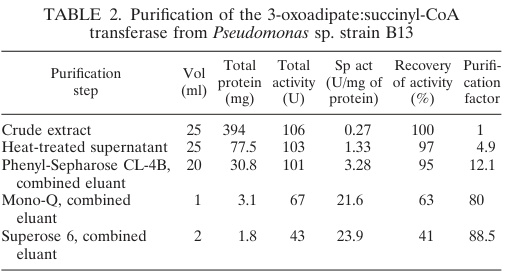

pcaJ encodes the beta-ketoadipate:succinyl-CoA transferase subunit B, the small subunit of the heterodimeric PcaIJ CoA-transferase that converts 3-oxoadipate and succinyl-CoA to 3-oxoadipyl-CoA and succinate. This reaction is the first of the two terminal beta-ketoadipate-pathway steps that funnel aromatic-ring cleavage products into central metabolism as succinyl-CoA and acetyl-CoA.
| GO Term | Evidence | Action | Reason |
|---|---|---|---|
|
GO:0008410
CoA-transferase activity
|
IEA
GO_REF:0000120 |
MARK AS OVER ANNOTATED |
Summary: The annotation is directionally correct because PcaJ is part of a CoA-transferase, but it is an uninformative parent term. The same GOA set already includes the exact catalytic activity for this enzyme, GO:0047569 3-oxoadipate CoA-transferase activity, so retaining the broader parent adds no functional resolution.
Reason: The specific catalytic function is already captured by GO:0047569, making GO:0008410 redundant for this gene. Falcon deep research confirms PcaJ is the beta subunit of a defined two-subunit CoA-transferase rather than a generic CoA-transferase, reinforcing that the specific child term is the informative one.
Supporting Evidence:
file:PSEPK/pcaJ/pcaJ-uniprot.txt
RecName: Full=3-oxoadipate CoA-transferase subunit B; EC=2.8.3.6;
file:PSEPK/pcaJ/pcaJ-uniprot.txt
Reaction=3-oxoadipate + succinyl-CoA = 3-oxoadipyl-CoA + succinate;
file:PSEPK/pcaJ/pcaJ-deep-research-falcon.md
**PcaJ is the beta (B) subunit** of the two-subunit CoA-transferase **PcaIJ** (EC 2.8.3.6).
|
|
GO:0047569
3-oxoadipate CoA-transferase activity
|
IEA
GO_REF:0000120 |
ACCEPT |
Summary: This is the core molecular function of PcaJ. UniProt assigns EC 2.8.3.6 and explicitly gives the 3-oxoadipate plus succinyl-CoA to 3-oxoadipyl-CoA plus succinate reaction, which is the defining catalytic step of beta-ketoadipate:succinyl-CoA transferase.
Reason: The term precisely captures the catalytic activity encoded by pcaJ and should remain as the core molecular-function annotation. Falcon deep research corroborates the succinyl-CoA-dependent CoA-transfer mechanism and documents narrow substrate specificity for the homologous Pseudomonas enzyme, consistent with a dedicated 3-oxoadipate CoA-transferase activity rather than promiscuous CoA transfer.
Supporting Evidence:
file:PSEPK/pcaJ/pcaJ-uniprot.txt
RecName: Full=3-oxoadipate CoA-transferase subunit B; EC=2.8.3.6;
file:PSEPK/pcaJ/pcaJ-uniprot.txt
Reaction=3-oxoadipate + succinyl-CoA = 3-oxoadipyl-CoA + succinate;
file:PSEPK/pcaJ/pcaJ-deep-research-falcon.md
PcaIJ catalyzes the **CoA-transfer step** that activates β-ketoadipate (3-oxoadipate) to a CoA thioester using **succinyl-CoA** as the CoA donor (producing succinate)
file:PSEPK/pcaJ/pcaJ-deep-research-falcon.md
the transferase showed **very low activity** on related dicarboxylic/oxoacid analogs such as **2-oxoadipate** and **3-oxoglutarate** (0.01–0.02% relative)
|
|
GO:0042952
beta-ketoadipate pathway
|
IEA
GO_REF:0000041 |
ACCEPT |
Summary: This pathway annotation is appropriate for PcaJ because the enzyme directly catalyzes the 3-oxoadipate CoA-transfer step within the beta-ketoadipate pathway, rather than acting only indirectly through regulation or transport. UniProt maps the protein to step 1 of 2 in the terminal conversion of 3-oxoadipate to central carbon metabolites.
Reason: PcaJ is a bona fide pathway enzyme whose direct catalytic role justifies retention of the pathway-level biological-process annotation. Falcon deep research adds KT2440-specific support, showing that PcaJ is induced during growth on the aromatic substrate benzoate and that the pca operons are under beta-ketoadipate-pathway control via the PcaR regulator, confirming the enzyme is engaged specifically under aromatic-catabolic (beta-ketoadipate pathway) conditions.
Supporting Evidence:
file:PSEPK/pcaJ/pcaJ-uniprot.txt
PATHWAY: Aromatic compound metabolism; beta-ketoadipate pathway; acetyl-CoA and succinyl-CoA from 3-oxoadipate: step 1/2.
file:PSEPK/pcaJ/pcaJ-deep-research-falcon.md
quantitative iTRAQ proteomics reported an induction ratio for **pcaJ (PP_3952) of 2.69** and for **pcaI (PP_3951) of 1.58** (benzoate/succinate)
file:PSEPK/pcaJ/pcaJ-deep-research-falcon.md
the protocatechuate (β-ketoadipate) branch is described as being regulated by **PcaR** (IclR-type), a transcriptional activator controlling expression of pca operons
|
Q: How much of substrate specificity in the PcaIJ heterodimer is contributed by PcaJ versus the partner subunit PcaI?
Suggested experts: Enzyme mechanism and aromatic-catabolism researchers
Q: Are there physiological conditions in KT2440 where another CoA-transferase can partially compensate for loss of pcaJ?
Suggested experts: Pseudomonas systems-biology and metabolic-engineering researchers
Experiment: Purify the PcaIJ heterodimer and measure steady-state kinetics with 3-oxoadipate and related 3-oxoacids to define substrate scope and subunit contributions.
Experiment: Knock out or CRISPRi pcaJ during growth on protocatechuate or p-coumarate and quantify beta-ketoadipate and 3-oxoadipyl-CoA accumulation by LC-MS.
The research report should be a detailed narrative explaining the function, biological processes, and localization of the gene product. Citations should be given for all claims.
You should prioritize authoritative reviews and primary scientific literature when conducting research. You can supplement
this with annotations you find in gene/protein databases, but these can be outdated or inaccurate.
We are specifically interested in the primary function of the gene - for enzymes, what reaction is catalyzed, and what is the substrate specificity? For transporters, what is the substrate? For structural proteins or adapters, what is the broader structural role? For signaling molecules, what is the role in the pathway.
We are interested in where in or outside the cell the gene product carries out its function.
We are also interested in the signaling or biochemical pathways in which the gene functions. We are less interested in broad pleiotropic effects, except where these elucidate the precise role.
Include evidence where possible. We are interested in both experimental evidence as well as inference from structure, evolution, or bioinformatic analysis. Precise studies should be prioritized over high-throughput, where available.
The UniProt accession P0A101 corresponds to Pseudomonas putida strain KT2440 protein PcaJ, which is annotated as 3-oxoadipate CoA-transferase subunit B (β-ketoadipate:succinyl-CoA transferase subunit B; EC 2.8.3.6). In KT2440 proteomics, pcaJ is explicitly mapped to PP_3952, and is paired with pcaI (PP_3951), consistent with the canonical two-subunit enzyme PcaIJ in the β-ketoadipate pathway. (yun2011proteomiccharacterizationof pages 4-5)
Across bacteria, the naming convention pcaI/pcaJ recurrently refers to the two subunits of 3-oxoadipate (β-ketoadipate):succinyl-CoA transferase, further supporting that KT2440 PP_3952 is the same functional class of enzyme as UniProt describes. (xu2025pathwaycrosstalkenables pages 5-7)
The β-ketoadipate (βKA) pathway is a central, convergent aerobic route by which many soil bacteria—especially Pseudomonas—funnel diverse aromatics (e.g., benzoate, 4-hydroxybenzoate, lignin-derived aromatics via protocatechuate/catechol branches) into central metabolism. In pathway summaries emphasizing Pseudomonas putida as a model, PcaIJ and PcaF are highlighted as the two CoA-dependent steps converting β-ketoadipate to TCA-cycle linked metabolites (succinate and acetyl-CoA). (dexter2024identificationandvalidation pages 31-37)
PcaJ is the beta (B) subunit of the two-subunit CoA-transferase PcaIJ (EC 2.8.3.6). In the β-ketoadipate pathway, PcaIJ catalyzes the CoA-transfer step that activates β-ketoadipate (3-oxoadipate) to a CoA thioester using succinyl-CoA as the CoA donor (producing succinate), enabling the next step catalyzed by PcaF (β-ketoadipyl-CoA thiolase) to cleave the activated intermediate toward central metabolites. (kaschabek2002degradationofaromatics pages 2-3, kaschabek2002degradationofaromatics pages 3-4, dexter2024identificationandvalidation pages 31-37)
A biochemical study in Pseudomonas sp. strain B13 (a close taxonomic context for Pseudomonas enzymes) directly supports this mechanistic role by demonstrating a succinyl-CoA–dependent formation of 3-oxoadipyl-CoA and subsequent thiolytic processing yielding central intermediates, consistent with the assigned PcaIJ/PcaF node. (kaschabek2002degradationofaromatics pages 2-3, kaschabek2002degradationofaromatics pages 3-4)
The functional reaction catalyzed by PcaIJ is a CoA-transfer between succinyl-CoA and β-ketoadipate/3-oxoadipate, producing a β-ketoadipyl(3-oxoadipyl)-CoA thioester (and succinate). This is a key “gateway” step that commits the aromatic ring-fission product to CoA-dependent conversion into central carbon metabolism. (kaschabek2002degradationofaromatics pages 2-3, kaschabek2002degradationofaromatics pages 3-4, dexter2024identificationandvalidation pages 31-37)
In the purified Pseudomonas sp. B13 enzyme, the transferase showed very low activity on related dicarboxylic/oxoacid analogs such as 2-oxoadipate and 3-oxoglutarate (0.01–0.02% relative), and failed to further convert some chlorinated analogs, indicating narrow specificity consistent with its specialized role in aromatic-ring fission product processing rather than broad promiscuous CoA transfer. (kaschabek2002degradationofaromatics pages 5-6)
Direct subcellular localization experiments for PcaJ were not retrieved here; however, KT2440 proteomics that quantified PcaJ was performed on a cytosolic (soluble) protein fraction, and PcaJ/PcaI were detected among soluble proteins induced by aromatic growth conditions. This supports that PcaJ functions primarily in the cytosol (as expected for most CoA-transferases acting on cytosolic CoA pools). (yun2011proteomiccharacterizationof pages 4-5)
In P. putida, the protocatechuate (β-ketoadipate) branch is described as being regulated by PcaR (IclR-type), a transcriptional activator controlling expression of pca operons; β-ketoadipate is reported as an inducer of these pca operons. (cao2008catabolicpathwaysand pages 10-11)
Consistent with this model, KT2440 proteomics detected strong induction of β-ketoadipate pathway enzymes during growth on an aromatic substrate (benzoate), including both subunits PcaI/PcaJ, consistent with transcriptional induction and pathway engagement under aromatic-catabolic conditions. (yun2011proteomiccharacterizationof pages 4-5)
In P. putida KT2440 grown on benzoate versus succinate, quantitative iTRAQ proteomics reported an induction ratio for pcaJ (PP_3952) of 2.69 and for pcaI (PP_3951) of 1.58 (benzoate/succinate), indicating that PcaJ is strongly upregulated when aromatics are catabolized through the β-ketoadipate pathway. (yun2011proteomiccharacterizationof pages 4-5)
For the purified Pseudomonas sp. strain B13 3-oxoadipate:succinyl-CoA transferase, reported parameters included Km(3-oxoadipyl-CoA) = 0.15 mM, Km(CoA) = 0.01 mM, kcat = 470 min−1, and pH optimum ≈ 7.8; the enzyme was also reported to be inhibited by NADH (remaining activity ~90% at 0.4 mM and ~58% at 0.8 mM NADH in the assay conditions described). (kaschabek2002degradationofaromatics pages 5-6)
Purification data show strong enrichment of activity (e.g., specific activity increasing from ~0.27 U/mg crude extract to ~21.6 U/mg after Mono-Q), consistent with an inducible pathway enzyme abundant under aromatic growth. (kaschabek2002degradationofaromatics pages 3-4, kaschabek2002degradationofaromatics media f1b56e0a)
Note: these kinetic constants were not measured directly for KT2440 PcaIJ in the retrieved corpus; they are used here as high-confidence functional support from a closely related Pseudomonas enzyme performing the same EC 2.8.3.6 reaction. (kaschabek2002degradationofaromatics pages 5-6)
A 2023 Science Advances study engineered P. putida KT2440 to convert mixed lignin-related aromatic compounds to β-ketoadipate, explicitly leveraging the organism’s native β-ketoadipate pathway and manipulating pcaIJ to accumulate product rather than fully catabolize it. (pqac-00000005; publication date in text: 6 Sep 2023 (werner2023ligninconversionto pages 7-8))
Key reported production metrics included:
- From corn stover-derived lignin-related compound (LRC) extractives: 25 g/L β-ketoadipate with 0.66 g/L/h maximum productivity, and yield reported as 1.2 g/g LRCs, corresponding to 0.10 g β-ketoadipate per g total corn stover lignin (in their accounting). (werner2023ligninconversionto pages 7-8)
- A technoeconomic analysis (TEA) using experimentally determined base-case metrics (40 g/L, 1.15 g/L/h, 1.0 mol/mol) predicted a minimum selling price (MSP) ≈ $2.01/kg for β-ketoadipate in their modeled facility scale, and they compared this to historical adipic acid prices ($1.10–1.80/kg). (werner2023ligninconversionto pages 7-8)
- Life-cycle assessment (LCA) for the modeled conversion process reported GHG emissions ~1.99 kg CO2e/kg, improved to 1.69 kg CO2e/kg with ammonium sulfate coproduct recovery in their scenario analysis. (werner2023ligninconversionto pages 8-10)
These results demonstrate that the metabolic “decision point” governed by PcaIJ (and downstream PcaF) is a practical control knob for routing aromatic carbon either toward energy generation or toward accumulation of a valuable diacid intermediate. (werner2023ligninconversionto pages 1-2, werner2023ligninconversionto pages 7-8)
A 2024 mSystems paper applied independent component analysis (ICA) to a compendium of RB-TnSeq fitness data (179 conditions) in KT2440 to define 84 functional gene modules (“fModules”). The authors report modules associated with benzoate catabolism and note that module members include genes participating in protocatechuate catabolism toward β-ketoadipate enol-lactone, connecting modern functional genomics/ML approaches to the β-ketoadipate network that includes pca genes. (borchert2024machinelearninganalysis pages 6-7)
The authors also provide a public companion resource for module membership and interpretation (https://fmodules.github.io/putida), and emphasize that transposon libraries can be subject to polar effects in operons, which is relevant when interpreting fitness effects for operonic genes such as pcaI/pcaJ. (borchert2024machinelearninganalysis pages 6-7)
Bioprocessing / biomanufacturing of diacids and polymer precursors: The 2023 work provides an example of near-term industrial relevance by converting lignin streams into β-ketoadipate as a polymer precursor, supported by TEA/LCA and process modeling, demonstrating a realistic engineering path using KT2440. (werner2023ligninconversionto pages 7-8, werner2023ligninconversionto pages 8-10)
Environmental biodegradation and bioremediation: The PcaIJ node is part of the “terminal” central aromatic catabolism enabling growth on benzoate/4-hydroxybenzoate and many lignin-related compounds; induction of pcaJ in benzoate-grown KT2440 supports its role under pollutant-relevant growth conditions. (yun2011proteomiccharacterizationof pages 4-5)
Functional essentiality within aromatic funneling: PcaJ is not a peripheral aromatic-transforming enzyme; it sits at a central metabolic junction where ring-fission products are converted to CoA thioesters, enabling entry into central metabolism via PcaF. This explains why engineering strategies that target product accumulation often block pcaIJ: preventing CoA transfer keeps carbon in the β-ketoadipate pool rather than converting it onward to acetyl-CoA/succinate. (werner2023ligninconversionto pages 1-2, dexter2024identificationandvalidation pages 31-37)
Specificity is adaptive: The observed narrow substrate scope (very low activity on 2-oxoadipate/3-oxoglutarate; poor processing of substituted analogs) is consistent with specialization for β-ketoadipate-like ring-fission products, reducing off-pathway CoA transfer that could perturb central metabolism. (kaschabek2002degradationofaromatics pages 5-6)
Regulatory alignment with aromatic availability: The reported PcaR activation and induction by β-ketoadipate provides a mechanism for coordinating expression of the late β-ketoadipate pathway with the presence of upstream aromatic catabolic flux, consistent with proteomic induction in benzoate-grown cells. (cao2008catabolicpathwaysand pages 10-11, yun2011proteomiccharacterizationof pages 4-5)
Some critical KT2440-specific details were not directly retrievable in the current tool corpus:
- Direct biochemical characterization of KT2440 PcaIJ (Km/kcat, substrate panel) is not present here; the most complete kinetics come from a closely related Pseudomonas strain (B13). (kaschabek2002degradationofaromatics pages 5-6)
- Direct operon mapping / transcription start sites / PcaR binding sites for KT2440 pcaIJ were not recovered; regulation is supported by pathway-level Pseudomonas evidence and KT2440 protein-level induction. (cao2008catabolicpathwaysand pages 10-11, yun2011proteomiccharacterizationof pages 4-5)
- Direct gene knockout phenotype for KT2440 pcaJ alone was not retrieved; however, engineered strains that block pcaIJ to accumulate β-ketoadipate provide functional genetic evidence that loss of PcaIJ prevents downstream consumption of β-ketoadipate. (werner2023ligninconversionto pages 1-2)
pcaJ (PP_3952; UniProt P0A101) in Pseudomonas putida KT2440 encodes the beta subunit of the two-subunit 3-oxoadipate (β-ketoadipate):succinyl-CoA CoA-transferase (PcaIJ; EC 2.8.3.6). This cytosolic enzyme activates β-ketoadipate by CoA transfer from succinyl-CoA to form β-ketoadipyl-CoA, enabling conversion by downstream thiolase PcaF to central metabolic intermediates (acetyl-CoA/succinyl-CoA). Expression is induced during growth on aromatic substrates and is under β-ketoadipate pathway control involving PcaR and induction by β-ketoadipate. In metabolic engineering, disabling pcaIJ is an effective strategy to accumulate β-ketoadipate from lignin-derived aromatic mixtures at industrially relevant titers, with TEA/LCA indicating potential cost competitiveness for polymer-precursor production.
| Topic | Finding | Quantitative details | Citation |
|---|---|---|---|
| Gene/protein identity | In Pseudomonas putida KT2440, pcaJ corresponds to locus PP_3952 and functions with pcaI (PP_3951) as the two-subunit 3-oxoadipate/β-ketoadipate CoA-transferase PcaIJ. | pcaJ = PP_3952; pcaI = PP_3951 | (yun2011proteomiccharacterizationof pages 4-5) |
| Enzymatic role in pathway | PcaIJ (EC 2.8.3.6) catalyzes the CoA-transfer step in the β-ketoadipate pathway, converting β-ketoadipate (3-oxoadipate) and succinyl-CoA to 3-oxoadipyl-CoA and succinate; this CoA-activated intermediate is then cleaved by PcaF to central metabolites. | Pathway outcome: formation of TCA-linked products acetyl-CoA and succinyl-CoA after the subsequent PcaF step | (dexter2024identificationandvalidation pages 31-37, kaschabek2002degradationofaromatics pages 2-3, kaschabek2002degradationofaromatics pages 3-4) |
| KT2440 proteomic evidence | In benzoate-grown P. putida KT2440, both PcaIJ subunits were detected in soluble proteomics, supporting active use of the pathway. | iTRAQ induction ratio (benzoate/succinate): pcaJ 2.69, pcaI 1.58 | (yun2011proteomiccharacterizationof pages 4-5) |
| Biochemical characterization of homologous enzyme | A closely related Pseudomonas 3-oxoadipate:succinyl-CoA transferase was purified and shown to be reversible, supporting the assigned function of PcaIJ. | Km(3-oxoadipyl-CoA) = 0.15 mM; Km(CoA) = 0.01 mM; kcat = 470 min^-1; pH optimum ≈ 7.8; subunit mass ~42 kDa | (kaschabek2002degradationofaromatics pages 5-6) |
| Substrate specificity constraints | The homologous transferase showed narrow specificity consistent with aromatic-ring fission product processing rather than broad acyl transfer. | Relative activity with 2-oxoadipate and 3-oxoglutarate only 0.01–0.02%; chlorinated/methylated analogs were poor or not further converted | (kaschabek2002degradationofaromatics pages 5-6) |
| Purification/activity data | Enzyme activity was strongly enriched during purification from benzoate-grown cells, indicating inducible aromatic-catabolic function. | Specific activity increased from ~0.27 U/mg (crude extract) to ~21.6 U/mg (Mono-Q fraction) | (kaschabek2002degradationofaromatics pages 3-4, kaschabek2002degradationofaromatics media f1b56e0a) |
| Regulation/pathway context | pca genes in pseudomonads are controlled within the protocatechuate branch by PcaR, and β-ketoadipate acts as an inducer of pca operons. | Qualitative regulatory evidence; no KT2440-specific fold-change for pcaJ transcription retrieved here | (cao2008catabolicpathwaysand pages 10-11) |
| 2023 metabolic engineering application | In 2023, KT2440 was engineered to accumulate β-ketoadipate/β-ketoadipic acid by blocking downstream consumption, including manipulation of pcaIJ, demonstrating direct applied relevance of this node. | Fed-batch titers: 44.5 g/L (model lignin-related compounds) and 25 g/L (corn stover-derived compounds); productivities: 1.15 and 0.66 g/L/h; yield up to 1.0 mol/mol | (werner2023ligninconversionto pages 1-2) |
Table: This table summarizes the verified identity, biochemical role, key quantitative evidence, and recent engineering relevance of pcaJ/PcaIJ in the β-ketoadipate pathway. It is useful as a compact evidence map for functional annotation of PP_3952 in Pseudomonas putida KT2440.
References
(yun2011proteomiccharacterizationof pages 4-5): Sung-Ho Yun, Gun Wook Park, Jin Young Kim, Sang Oh Kwon, Chi-Won Choi, Sun-Hee Leem, Kyung-Hoon Kwon, Jong Shin Yoo, Chulhyun Lee, Soohyun Kim, and Seung Il Kim. Proteomic characterization of the pseudomonas putida kt2440 global response to a monocyclic aromatic compound by itraq analysis and 1de-mudpit. Journal of proteomics, 74 5:620-8, May 2011. URL: https://doi.org/10.1016/j.jprot.2011.01.020, doi:10.1016/j.jprot.2011.01.020. This article has 50 citations and is from a peer-reviewed journal.
(xu2025pathwaycrosstalkenables pages 5-7): Huan-Wei Xu, Xiao-Yan Wang, Ying Wei, Yiqi Cao, Shu-Guang Wang, and Peng-Fei Xia. Pathway crosstalk enables degradation of aromatic compounds in marine roseobacter clade bacteria. Applied and environmental microbiology, pages e0097825, Aug 2025. URL: https://doi.org/10.1128/aem.00978-25, doi:10.1128/aem.00978-25. This article has 2 citations and is from a peer-reviewed journal.
(dexter2024identificationandvalidation pages 31-37): Gara Dexter. Identification and validation of acetovanillone catabolism in rhodococcus rhodochrous gd02. Text, Jan 2024. URL: https://doi.org/10.14288/1.0447452, doi:10.14288/1.0447452. This article has 0 citations and is from a peer-reviewed journal.
(kaschabek2002degradationofaromatics pages 2-3): Stefan R. Kaschabek, Bernd Kuhn, Dagmar Müller, Eberhard Schmidt, and Walter Reineke. Degradation of aromatics and chloroaromatics by pseudomonas sp. strain b13: purification and characterization of 3-oxoadipate:succinyl-coenzyme a (coa) transferase and 3-oxoadipyl-coa thiolase. Journal of Bacteriology, 184:207-215, Jan 2002. URL: https://doi.org/10.1128/jb.184.1.207-215.2002, doi:10.1128/jb.184.1.207-215.2002. This article has 41 citations and is from a peer-reviewed journal.
(kaschabek2002degradationofaromatics pages 3-4): Stefan R. Kaschabek, Bernd Kuhn, Dagmar Müller, Eberhard Schmidt, and Walter Reineke. Degradation of aromatics and chloroaromatics by pseudomonas sp. strain b13: purification and characterization of 3-oxoadipate:succinyl-coenzyme a (coa) transferase and 3-oxoadipyl-coa thiolase. Journal of Bacteriology, 184:207-215, Jan 2002. URL: https://doi.org/10.1128/jb.184.1.207-215.2002, doi:10.1128/jb.184.1.207-215.2002. This article has 41 citations and is from a peer-reviewed journal.
(kaschabek2002degradationofaromatics pages 5-6): Stefan R. Kaschabek, Bernd Kuhn, Dagmar Müller, Eberhard Schmidt, and Walter Reineke. Degradation of aromatics and chloroaromatics by pseudomonas sp. strain b13: purification and characterization of 3-oxoadipate:succinyl-coenzyme a (coa) transferase and 3-oxoadipyl-coa thiolase. Journal of Bacteriology, 184:207-215, Jan 2002. URL: https://doi.org/10.1128/jb.184.1.207-215.2002, doi:10.1128/jb.184.1.207-215.2002. This article has 41 citations and is from a peer-reviewed journal.
(cao2008catabolicpathwaysand pages 10-11): Bin Cao and Kai‐Chee Loh. Catabolic pathways and cellular responses of pseudomonas putida p8 during growth on benzoate with a proteomics approach. Biotechnology and Bioengineering, 101:1297-1312, Dec 2008. URL: https://doi.org/10.1002/bit.21997, doi:10.1002/bit.21997. This article has 56 citations and is from a domain leading peer-reviewed journal.
(kaschabek2002degradationofaromatics media f1b56e0a): Stefan R. Kaschabek, Bernd Kuhn, Dagmar Müller, Eberhard Schmidt, and Walter Reineke. Degradation of aromatics and chloroaromatics by pseudomonas sp. strain b13: purification and characterization of 3-oxoadipate:succinyl-coenzyme a (coa) transferase and 3-oxoadipyl-coa thiolase. Journal of Bacteriology, 184:207-215, Jan 2002. URL: https://doi.org/10.1128/jb.184.1.207-215.2002, doi:10.1128/jb.184.1.207-215.2002. This article has 41 citations and is from a peer-reviewed journal.
(werner2023ligninconversionto pages 7-8): Allison Z. Werner, William T. Cordell, Ciaran W. Lahive, Bruno C. Klein, Christine A. Singer, Eric C. D. Tan, Morgan A. Ingraham, Kelsey J. Ramirez, Dong Hyun Kim, Jacob Nedergaard Pedersen, Christopher W. Johnson, Brian F. Pfleger, Gregg T. Beckham, and Davinia Salvachúa. Lignin conversion to β-ketoadipic acid by pseudomonas putida via metabolic engineering and bioprocess development. Science Advances, Sep 2023. URL: https://doi.org/10.1126/sciadv.adj0053, doi:10.1126/sciadv.adj0053. This article has 88 citations and is from a highest quality peer-reviewed journal.
(werner2023ligninconversionto pages 1-2): Allison Z. Werner, William T. Cordell, Ciaran W. Lahive, Bruno C. Klein, Christine A. Singer, Eric C. D. Tan, Morgan A. Ingraham, Kelsey J. Ramirez, Dong Hyun Kim, Jacob Nedergaard Pedersen, Christopher W. Johnson, Brian F. Pfleger, Gregg T. Beckham, and Davinia Salvachúa. Lignin conversion to β-ketoadipic acid by pseudomonas putida via metabolic engineering and bioprocess development. Science Advances, Sep 2023. URL: https://doi.org/10.1126/sciadv.adj0053, doi:10.1126/sciadv.adj0053. This article has 88 citations and is from a highest quality peer-reviewed journal.
(werner2023ligninconversionto pages 8-10): Allison Z. Werner, William T. Cordell, Ciaran W. Lahive, Bruno C. Klein, Christine A. Singer, Eric C. D. Tan, Morgan A. Ingraham, Kelsey J. Ramirez, Dong Hyun Kim, Jacob Nedergaard Pedersen, Christopher W. Johnson, Brian F. Pfleger, Gregg T. Beckham, and Davinia Salvachúa. Lignin conversion to β-ketoadipic acid by pseudomonas putida via metabolic engineering and bioprocess development. Science Advances, Sep 2023. URL: https://doi.org/10.1126/sciadv.adj0053, doi:10.1126/sciadv.adj0053. This article has 88 citations and is from a highest quality peer-reviewed journal.
(borchert2024machinelearninganalysis pages 6-7): Andrew J. Borchert, Alissa C. Bleem, Hyun Gyu Lim, Kevin Rychel, Keven D. Dooley, Zoe A. Kellermyer, Tracy L. Hodges, Bernhard O. Palsson, and Gregg T. Beckham. Machine learning analysis of rb-tnseq fitness data predicts functional gene modules in pseudomonas putida kt2440. Mar 2024. URL: https://doi.org/10.1128/msystems.00942-23, doi:10.1128/msystems.00942-23. This article has 12 citations and is from a peer-reviewed journal.

id: P0A101
gene_symbol: pcaJ
product_type: PROTEIN
aliases:
- PP_3952
status: DRAFT
taxon:
id: NCBITaxon:160488
label: Pseudomonas putida (strain ATCC 47054 / DSM 6125 / CFBP 8728 / NCIMB 11950
/ KT2440)
description: pcaJ encodes the beta-ketoadipate:succinyl-CoA transferase subunit B,
the small subunit of the heterodimeric PcaIJ CoA-transferase that converts 3-oxoadipate
and succinyl-CoA to 3-oxoadipyl-CoA and succinate. This reaction is the first of
the two terminal beta-ketoadipate-pathway steps that funnel aromatic-ring cleavage
products into central metabolism as succinyl-CoA and acetyl-CoA.
existing_annotations:
- term:
id: GO:0008410
label: CoA-transferase activity
qualifier: enables
evidence_type: IEA
original_reference_id: GO_REF:0000120
review:
summary: The annotation is directionally correct because PcaJ is part of a CoA-transferase,
but it is an uninformative parent term. The same GOA set already includes the
exact catalytic activity for this enzyme, GO:0047569 3-oxoadipate CoA-transferase
activity, so retaining the broader parent adds no functional resolution.
action: MARK_AS_OVER_ANNOTATED
reason: The specific catalytic function is already captured by GO:0047569, making
GO:0008410 redundant for this gene. Falcon deep research confirms PcaJ is the
beta subunit of a defined two-subunit CoA-transferase rather than a generic
CoA-transferase, reinforcing that the specific child term is the informative one.
supported_by:
- reference_id: file:PSEPK/pcaJ/pcaJ-uniprot.txt
supporting_text: 'RecName: Full=3-oxoadipate CoA-transferase subunit B; EC=2.8.3.6;'
- reference_id: file:PSEPK/pcaJ/pcaJ-uniprot.txt
supporting_text: Reaction=3-oxoadipate + succinyl-CoA = 3-oxoadipyl-CoA + succinate;
- reference_id: file:PSEPK/pcaJ/pcaJ-deep-research-falcon.md
supporting_text: '**PcaJ is the beta (B) subunit** of the two-subunit CoA-transferase
**PcaIJ** (EC 2.8.3.6).'
- term:
id: GO:0047569
label: 3-oxoadipate CoA-transferase activity
qualifier: enables
evidence_type: IEA
original_reference_id: GO_REF:0000120
review:
summary: This is the core molecular function of PcaJ. UniProt assigns EC 2.8.3.6
and explicitly gives the 3-oxoadipate plus succinyl-CoA to 3-oxoadipyl-CoA plus
succinate reaction, which is the defining catalytic step of beta-ketoadipate:succinyl-CoA
transferase.
action: ACCEPT
reason: The term precisely captures the catalytic activity encoded by pcaJ and
should remain as the core molecular-function annotation. Falcon deep research
corroborates the succinyl-CoA-dependent CoA-transfer mechanism and documents
narrow substrate specificity for the homologous Pseudomonas enzyme, consistent
with a dedicated 3-oxoadipate CoA-transferase activity rather than promiscuous
CoA transfer.
supported_by:
- reference_id: file:PSEPK/pcaJ/pcaJ-uniprot.txt
supporting_text: 'RecName: Full=3-oxoadipate CoA-transferase subunit B; EC=2.8.3.6;'
- reference_id: file:PSEPK/pcaJ/pcaJ-uniprot.txt
supporting_text: Reaction=3-oxoadipate + succinyl-CoA = 3-oxoadipyl-CoA + succinate;
- reference_id: file:PSEPK/pcaJ/pcaJ-deep-research-falcon.md
supporting_text: PcaIJ catalyzes the **CoA-transfer step** that activates β-ketoadipate
(3-oxoadipate) to a CoA thioester using **succinyl-CoA** as the CoA donor (producing
succinate)
- reference_id: file:PSEPK/pcaJ/pcaJ-deep-research-falcon.md
supporting_text: the transferase showed **very low activity** on related dicarboxylic/oxoacid
analogs such as **2-oxoadipate** and **3-oxoglutarate** (0.01–0.02% relative)
- term:
id: GO:0042952
label: beta-ketoadipate pathway
qualifier: involved_in
evidence_type: IEA
original_reference_id: GO_REF:0000041
review:
summary: This pathway annotation is appropriate for PcaJ because the enzyme directly
catalyzes the 3-oxoadipate CoA-transfer step within the beta-ketoadipate pathway,
rather than acting only indirectly through regulation or transport. UniProt
maps the protein to step 1 of 2 in the terminal conversion of 3-oxoadipate to
central carbon metabolites.
action: ACCEPT
reason: PcaJ is a bona fide pathway enzyme whose direct catalytic role justifies
retention of the pathway-level biological-process annotation. Falcon deep research
adds KT2440-specific support, showing that PcaJ is induced during growth on the
aromatic substrate benzoate and that the pca operons are under beta-ketoadipate-pathway
control via the PcaR regulator, confirming the enzyme is engaged specifically
under aromatic-catabolic (beta-ketoadipate pathway) conditions.
supported_by:
- reference_id: file:PSEPK/pcaJ/pcaJ-uniprot.txt
supporting_text: 'PATHWAY: Aromatic compound metabolism; beta-ketoadipate pathway;
acetyl-CoA and succinyl-CoA from 3-oxoadipate: step 1/2.'
- reference_id: file:PSEPK/pcaJ/pcaJ-deep-research-falcon.md
supporting_text: quantitative iTRAQ proteomics reported an induction ratio for
**pcaJ (PP_3952) of 2.69** and for **pcaI (PP_3951) of 1.58** (benzoate/succinate)
- reference_id: file:PSEPK/pcaJ/pcaJ-deep-research-falcon.md
supporting_text: the protocatechuate (β-ketoadipate) branch is described as being
regulated by **PcaR** (IclR-type), a transcriptional activator controlling
expression of pca operons
references:
- id: GO_REF:0000041
title: Gene Ontology annotation based on UniPathway vocabulary mapping.
findings:
- statement: UniPathway mapping places PcaJ in the beta-ketoadipate pathway.
- id: GO_REF:0000120
title: Combined Automated Annotation using Multiple IEA Methods.
findings:
- statement: Automated IEA methods recover the general and specific CoA-transferase
activities for PcaJ.
- id: PMID:1624453
title: Characterization of the genes encoding beta-ketoadipate:succinyl-coenzyme
A transferase in Pseudomonas putida.
findings:
- supporting_text: DNA sequence analysis revealed two open reading frames, designated
pcaI and pcaJ, that were separated by 8 bp, suggesting that they may comprise
an operon.
reference_section_type: ABSTRACT
- supporting_text: beta-Ketoadipate:succinyl-coenzyme A transferase (beta-ketoadipate:succinyl-CoA
transferase) (EC 2.8.3.6) carries out the penultimate step in the conversion
of benzoate and 4-hydroxybenzoate to tricarboxylic acid cycle intermediates
in bacteria utilizing the beta-ketoadipate pathway.
reference_section_type: ABSTRACT
- id: PMID:36093381
title: Dynamic and single cell characterization of a CRISPR-interference toolset
in Pseudomonas putida KT2440 for beta-ketoadipate production from p-coumarate.
findings:
- supporting_text: These cultivation metrics were achieved by using the higher strength
IPTG (1K)-inducible promoter to knockdown the pcaIJ operon in the βKA pathway
during early exponential phase.
reference_section_type: ABSTRACT
- id: file:PSEPK/pcaJ/pcaJ-uniprot.txt
title: UniProt entry P0A101
findings:
- supporting_text: 'RecName: Full=3-oxoadipate CoA-transferase subunit B'
reference_section_type: OTHER
- supporting_text: Reaction=3-oxoadipate + succinyl-CoA = 3-oxoadipyl-CoA + succinate;
reference_section_type: OTHER
- id: file:PSEPK/pcaJ/pcaJ-deep-research-falcon.md
title: Falcon deep research report for pcaJ (P0A101)
findings:
- supporting_text: '**PcaJ is the beta (B) subunit** of the two-subunit CoA-transferase
**PcaIJ** (EC 2.8.3.6).'
reference_section_type: OTHER
- supporting_text: PcaIJ catalyzes the **CoA-transfer step** that activates β-ketoadipate
(3-oxoadipate) to a CoA thioester using **succinyl-CoA** as the CoA donor (producing
succinate)
reference_section_type: OTHER
- supporting_text: the transferase showed **very low activity** on related dicarboxylic/oxoacid
analogs such as **2-oxoadipate** and **3-oxoglutarate** (0.01–0.02% relative),
and failed to further convert some chlorinated analogs, indicating **narrow specificity**
consistent with its specialized role in aromatic-ring fission product processing
rather than broad promiscuous CoA transfer.
reference_section_type: OTHER
- supporting_text: This supports that PcaJ functions primarily in the **cytosol**
(as expected for most CoA-transferases acting on cytosolic CoA pools).
reference_section_type: OTHER
- supporting_text: quantitative iTRAQ proteomics reported an induction ratio for
**pcaJ (PP_3952) of 2.69** and for **pcaI (PP_3951) of 1.58** (benzoate/succinate),
indicating that PcaJ is strongly upregulated when aromatics are catabolized through
the β-ketoadipate pathway.
reference_section_type: OTHER
- supporting_text: the protocatechuate (β-ketoadipate) branch is described as being
regulated by **PcaR** (IclR-type), a transcriptional activator controlling expression
of pca operons
reference_section_type: OTHER
- supporting_text: '**Km(3-oxoadipyl-CoA) = 0.15 mM**, **Km(CoA) = 0.01 mM**, **kcat
= 470 min−1**, and **pH optimum ≈ 7.8**'
reference_section_type: OTHER
core_functions:
- description: As the subunit B component of the heterodimeric PcaIJ CoA-transferase,
PcaJ helps transfer CoA from succinyl-CoA to 3-oxoadipate to generate 3-oxoadipyl-CoA
and succinate. This is the penultimate enzymatic step of the beta-ketoadipate
pathway that channels aromatic-catabolic intermediates into central metabolism.
molecular_function:
id: GO:0047569
label: 3-oxoadipate CoA-transferase activity
directly_involved_in:
- id: GO:0042952
label: beta-ketoadipate pathway
supported_by:
- reference_id: file:PSEPK/pcaJ/pcaJ-uniprot.txt
supporting_text: Reaction=3-oxoadipate + succinyl-CoA = 3-oxoadipyl-CoA + succinate;
- reference_id: PMID:1624453
supporting_text: DNA sequence analysis revealed two open reading frames, designated
pcaI and pcaJ, that were separated by 8 bp, suggesting that they may comprise
an operon.
reference_section_type: ABSTRACT
- reference_id: PMID:36093381
supporting_text: These cultivation metrics were achieved by using the higher
strength IPTG (1K)-inducible promoter to knockdown the pcaIJ operon in the
βKA pathway during early exponential phase.
reference_section_type: ABSTRACT
- reference_id: file:PSEPK/pcaJ/pcaJ-deep-research-falcon.md
supporting_text: PcaIJ catalyzes the **CoA-transfer step** that activates β-ketoadipate
(3-oxoadipate) to a CoA thioester using **succinyl-CoA** as the CoA donor (producing
succinate)
- reference_id: file:PSEPK/pcaJ/pcaJ-deep-research-falcon.md
supporting_text: '**pcaJ (PP_3952; UniProt P0A101)** in *Pseudomonas putida* KT2440
encodes the **beta subunit of the two-subunit 3-oxoadipate (β-ketoadipate):succinyl-CoA
CoA-transferase (PcaIJ; EC 2.8.3.6)**.'
suggested_questions:
- question: How much of substrate specificity in the PcaIJ heterodimer is contributed
by PcaJ versus the partner subunit PcaI?
experts:
- Enzyme mechanism and aromatic-catabolism researchers
- question: Are there physiological conditions in KT2440 where another CoA-transferase
can partially compensate for loss of pcaJ?
experts:
- Pseudomonas systems-biology and metabolic-engineering researchers
suggested_experiments:
- description: Purify the PcaIJ heterodimer and measure steady-state kinetics with
3-oxoadipate and related 3-oxoacids to define substrate scope and subunit contributions.
- description: Knock out or CRISPRi pcaJ during growth on protocatechuate or p-coumarate
and quantify beta-ketoadipate and 3-oxoadipyl-CoA accumulation by LC-MS.
{kind=link}